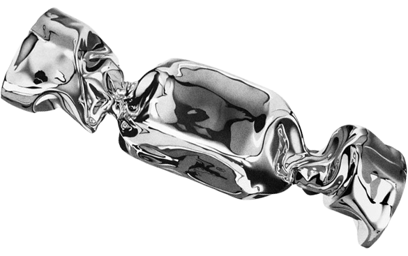

FRESHNESS
DELIVERED
Premium Quality
Farm-to-table groceries delivered
straight to your doorstep.


Premium Quality
Farm-to-table groceries delivered
straight to your doorstep.
We partner with local farmers to ensure you get the crispest vegetables and juiciest fruits
every single morning. Quality is our top priority, and we hand-pick every item to ensure it meets our "Freshness Guarantee" before it ever reaches your shopping bag.
From farm-fresh dairy to artisan bread baked daily, we bring the local market experience
right to your screen. No more long queues or heavy lifting—just fresh food fast.
